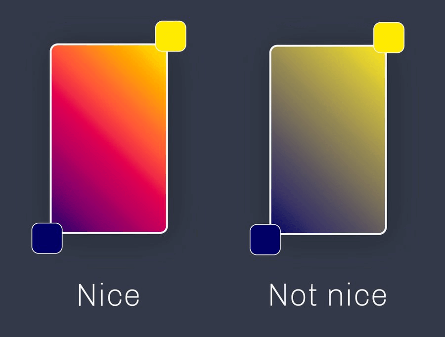
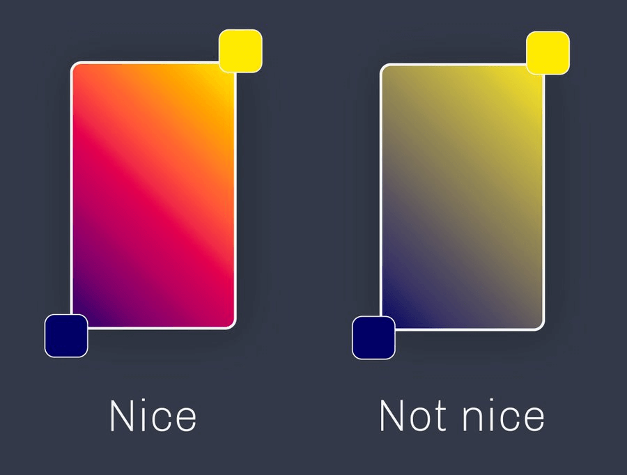

Gradient 渐变色研究
图片中经常可以使用到渐变色，两个颜色形成自然过渡效果，在实际体验中可以发现，有时候渐变色看起来很舒服，有时候看起来比较别扭，下面分析一下其中原因。
下图是两个颜色组成的渐变效果，它们两端的颜色都一样，但是效果相差很多：

明显左边的看起来更加舒服，右边的比较生硬。
图片中经常可以使用到渐变色，两个颜色形成自然过渡效果，在实际体验中可以发现，有时候渐变色看起来很舒服，有时候看起来比较别扭，下面分析一下其中原因。
下图是两个颜色组成的渐变效果，它们两端的颜色都一样，但是效果相差很多：

明显左边的看起来更加舒服，右边的比较生硬。